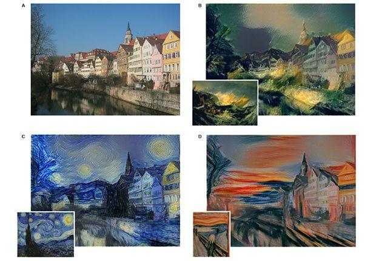
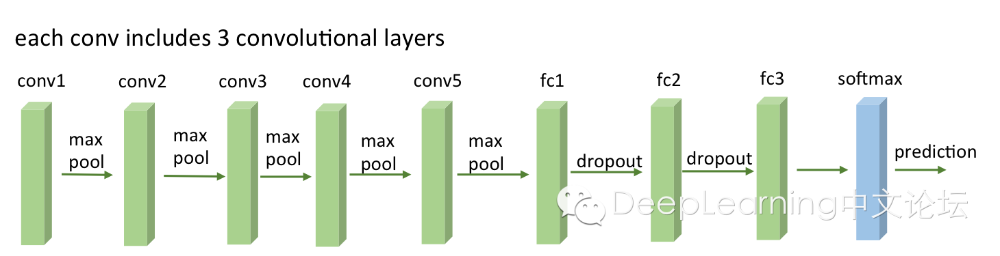
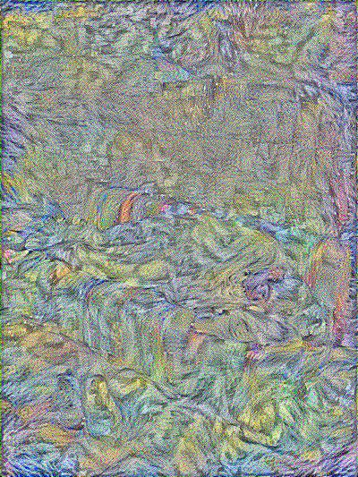
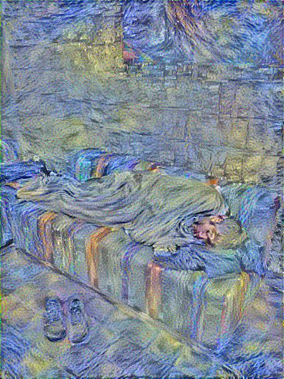

Tensorflow Neural Network初体验 - 让电脑自己学习艺术风格去处理图片
最近俄国的一款APP比较火，名叫Prisma，利用人工神经网络技术，可以学习名画艺术风格，对我们的照片进行艺术化处理。
好奇心起，了解了一下其原理，简单说即学习一副画的风格，并将这幅画的风格应用到另一幅图片上。那我们完全可以利用Tensorflow Neural Network功能，来实现类似Prisma的功能，可以自定义诸多参数，比如多幅画的混合风格，不同权重，学习率等，来任意定制我们想要的绘画风格，取得比Prisma更灵活的效果。
利用神经网络进行人工智能绘画，起源于2015年9月的一篇论文”A Neural Algorithm of Artistic Style”，如下图显示不同风格的处理效果。

代码参考anishathalye/neural-style,基于Tensorflow CNN工具包和VGG模型。VGG做为常用的几种模型结构，与AlexNet类似，如下图示意：

转换图片风格命令如下：
python neural_style.py --content <content file> --styles <style file> --output <output file>
如下图示意，原图、风格图、转换图分别如下：


一般1000次以上迭代即可以有不错效果，下面展示了200次、600次的效果。


进一步，也可以考虑对视频做处理，而为了避免视频每一帧单独处理时的风格波动，可以将前一帧的输出，做为下一帧处理的初始输入。如anishathalye的演示例子：